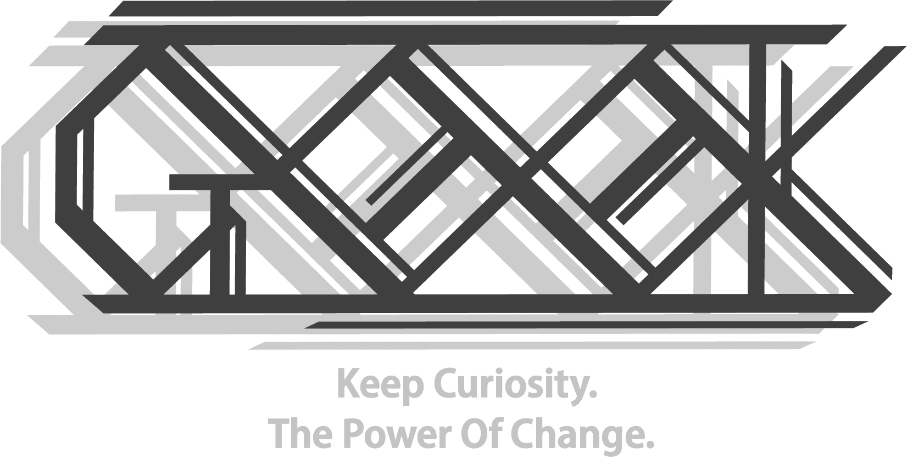
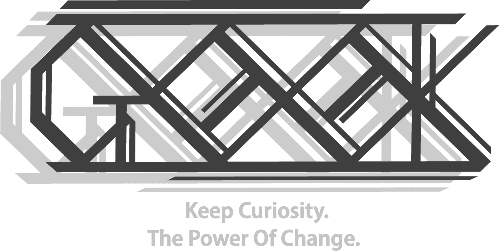

About US

每周我们会举行一次技术例会，用来汇报我们的学习内容，供成员之间交流学习。

多元化是我们的特色。在这里，你可以拥有多种方向选择，前后端、安全、AI、产品/设计、游戏等。

耐心、毅力是我们必备的品质，每周我们会至少花30小时在实验室中。以保证技术的精进。

 



每周我们会举行一次技术例会，用来汇报我们的学习内容，供成员之间交流学习。
多元化是我们的特色。在这里，你可以拥有多种方向选择，前后端、安全、AI、产品/设计、游戏等。
耐心、毅力是我们必备的品质，每周我们会至少花30小时在实验室中。以保证技术的精进。


•热爱计算机，具有geek精神，喜欢DIY，动手能力较强
•有编程/算法/硬件基础为佳(有作品可附上)
•有足够的空余时间，热爱思考，对事物有自己的见解
ps:非新思路统招只有通过发送邮件自我介绍后，收到邮件回执后才会被允许进群,在读学生, 都可邮件到newthread_geek@outlook.com报名加入
(信中需备注个人基本信息以及意向方向,此招新活动为长期招新)